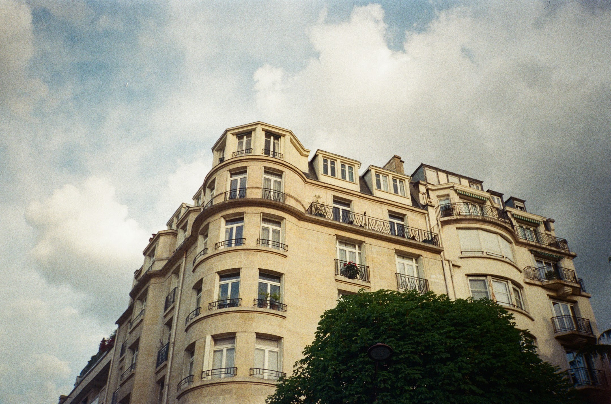
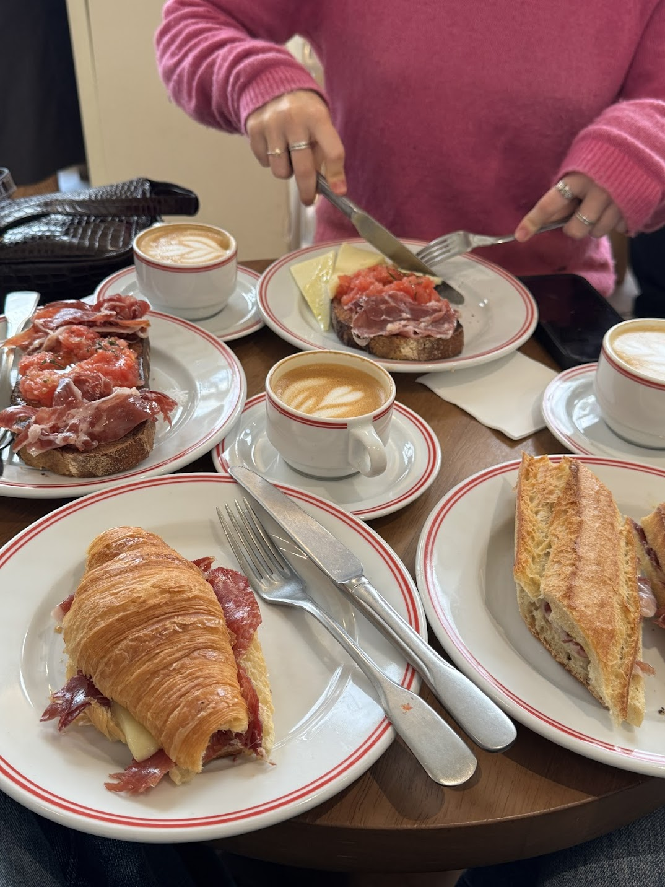
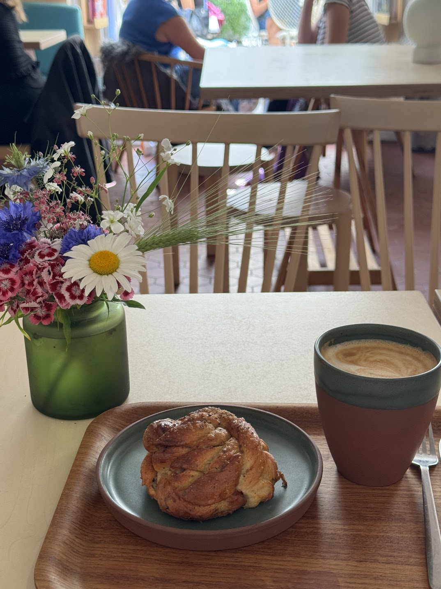
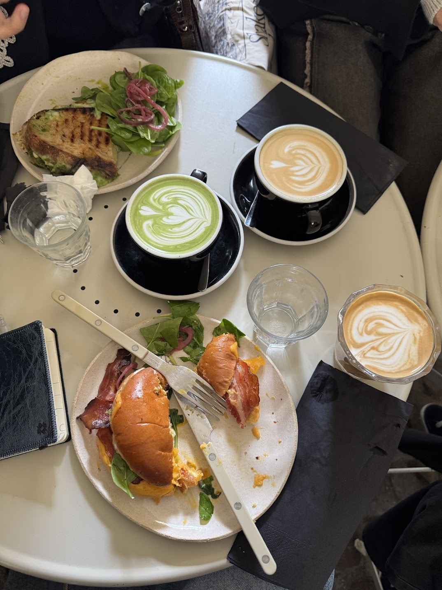
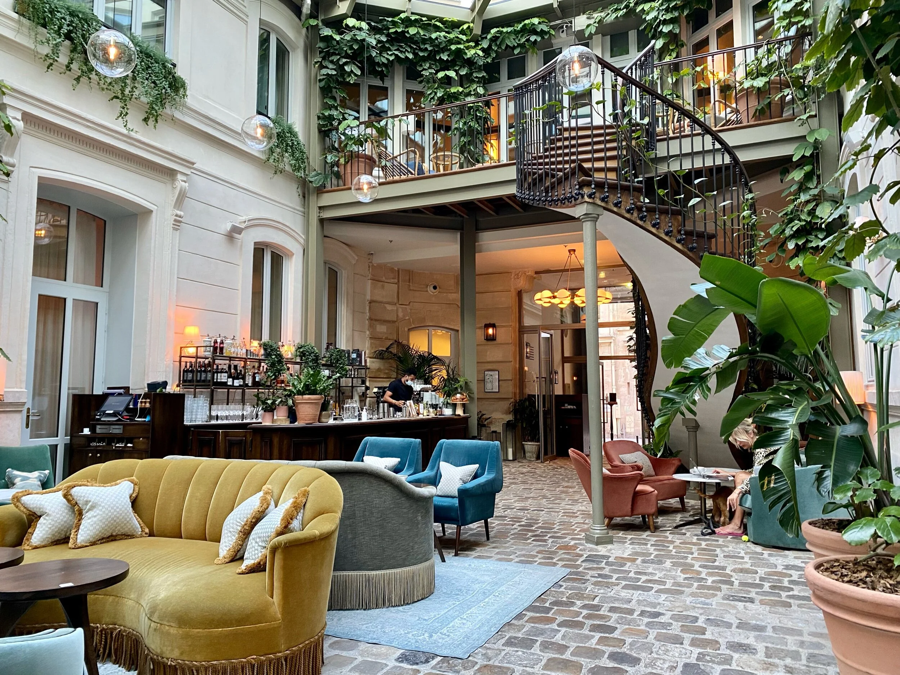
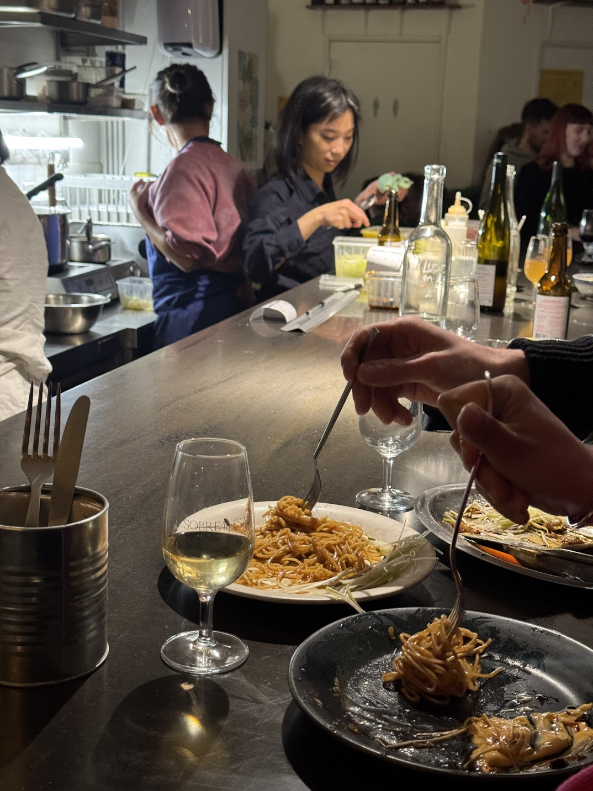
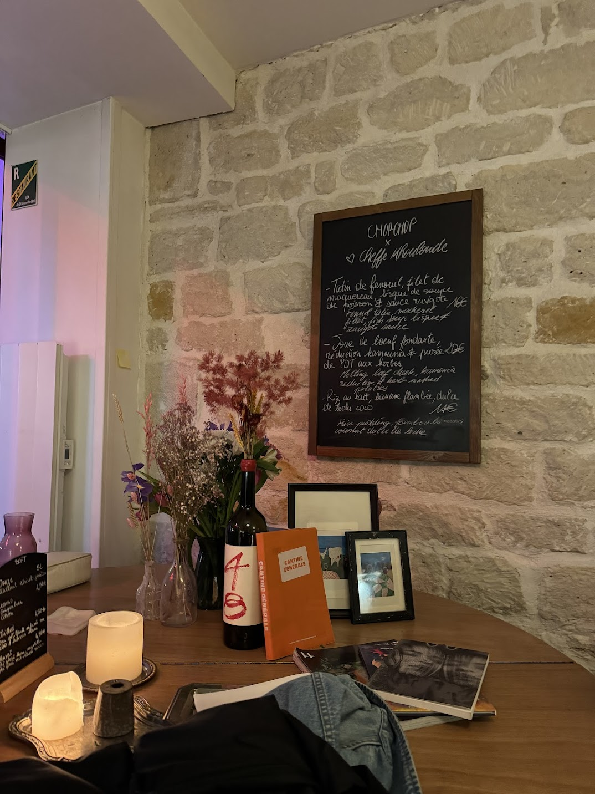
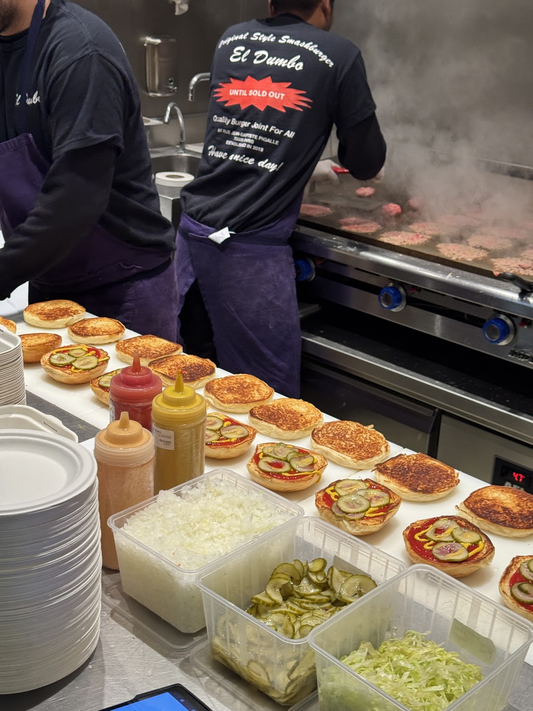

Cities / Paris
Eat & Drink
The cafés, restaurants, and places to linger. Paris rewards the people who keep coming back.

Cafés
Cortado
3rd arr.
31 rue Charlot
Marais
My most frequented spot during the whole time I lived in Paris, it deserved spot #1 on this list. A small piece of Spain tucked into the Marais, opened by three Spanish siblings who wanted Paris to know what a real cortado tasted like. The coffee comes from Nomad in Barcelona, the pan con tomate arrives with proper olive oil, and the soundtrack is as Latin as it can get, think Reggaeton, Tini, and oldschool classics (plus,their homage to Rosalia - iykyk). Come for the morning for a croissant with jamon serrano; stay through nightime to try their fantastic Vermú.

Café Fika
3rd arr.
11 rue Payenne
Institut Suédois
Hidden inside the courtyard of the Swedish cultural institute — itself housed in a beautiful 17th-century hôtel particulier — Fika is the kind of café that feels like it belongs only to the people who know about it. Order a cardamom bun and a coffee, settle into the stone courtyard, and try not to think about your actual life. The small permanent exhibition upstairs is worth a look on the way in. Fika, in Swedish, means pausing to eat and drink in good company — the café earns the name. Also, if you go early enough and find a spot, this is the perfect place to lock in and have a good work sesh.

Café Berry
3rd arr.
10 rue Chapon
Marais
A brunch café in the Marais. Another one of my faves, if you visited me abroad, I probably dragged you here to have the Bun Egg with Bacon - seriously addicting it hits the spot. Come on a weekday morning when rue Chapon is still quiet, and take the outdoor terrace if the weather permits.

The Hoxton
2nd arr.
rue du Sentier
Sentier
Technically a hotel, but in practice one of the better places to spend a working morning in Paris. The galleried lobby of this 18th-century building — all velvet sofas, herringbone floors, and fast wifi — is open to non-guests, and no one will rush you out. Order something at Rivié, find a corner, order yourself a drink, and work away. The covered courtyard is especially good in spring, when the light comes in at an angle that makes everything feel like it's going well. This was my safe spot during finals szn when staying in my apartment felt wrong because the weather was finally amazing in Paris. Photo courtesy of palms and bricks in their hotel review.

Off Campus
11th arr.
18 bd Voltaire
République
Opened in early 2025, Off Campus is a specialty café, independent bookshop, and evening lecture space all in one. It's run by two founders who believe adults should keep learning, and that a good flat white makes it easier. The book selection mirrors the evening course programme: geopolitics, philosophy, cinema, ecology. Laptops are allowed only at the communal table, technically for one hour — a rule that will either annoy you or remind you that not everything needs to be a coworking space. And they also have workshops, classes, events... Truly the best spot if you're a film and art lover like myself.

Restaurants
Sobremesa
18th arr.
127 rue Caulaincourt
Montmartre
My boyfriend visited me in February last year and I took him here for my Valentine's day plans. I've never had an experience like this one. Sobremesa is a natural wine bar in Montmartre with an amazing concept: every month, a new chef-in-residence takes over the kitchen and cooks whatever they want — the menu has gone Burmese, Spanish, Chinese, Congolese, and back again. This place feels like someone's living room, and the natural wine list from small producers is genuinely well chosen. I recommend ordering the full course menu that has smaller portions, but you get to try everything - which is the fun of this spot! No two visits are the same.

Chop Chop Love
10th arr.
48 rue du Faubourg Saint-Martin
Strasbourg-Saint-Denis
In a small room with white stone walls and wooden décor in the 10th, the new creative scene of Paris has been gathering for years. Ismaël, Julien, and Ramy wanted to build something with love, sharing, and energy, and that's exactly what landed. The kitchen runs on short chef residencies, each bringing their own flavours: tajine kefta buns, homemade pasta, dishes that borrow from everywhere. The natural wine cellar is carefully curated. The vibe is everything, and they know it. Similar to Sobremesa, I went with my best friends and we tried a new cuisine! It felt like a fun activity and flavor class. Excited to go again on a different flavorful journey...

Dumbo
9th arr.
64 rue Jean-Baptiste Pigalle
10th arr.
14 rue des Petites-Écuries
There is nothing complicated about Dumbo, and that's exactly the point. A single smash burger — dry-aged beef, American cheese, onions, pickles, ketchup and mustard on a perfectly soft bun — cooked on a screaming hot plancha until the edges go crispy and the cheese melts into everything. The fries are fried twice and salted properly. The best burger in Paris, without an argument.
